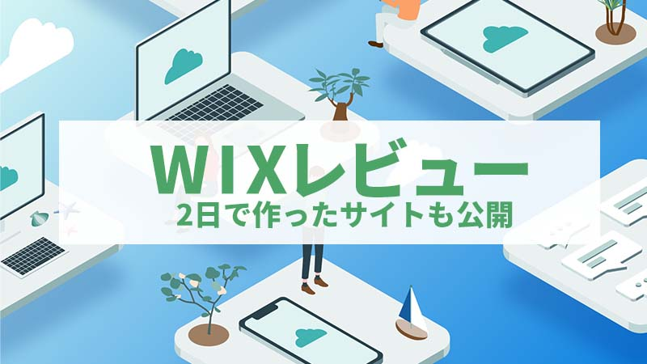
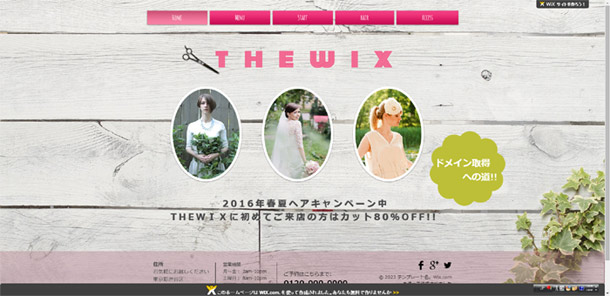
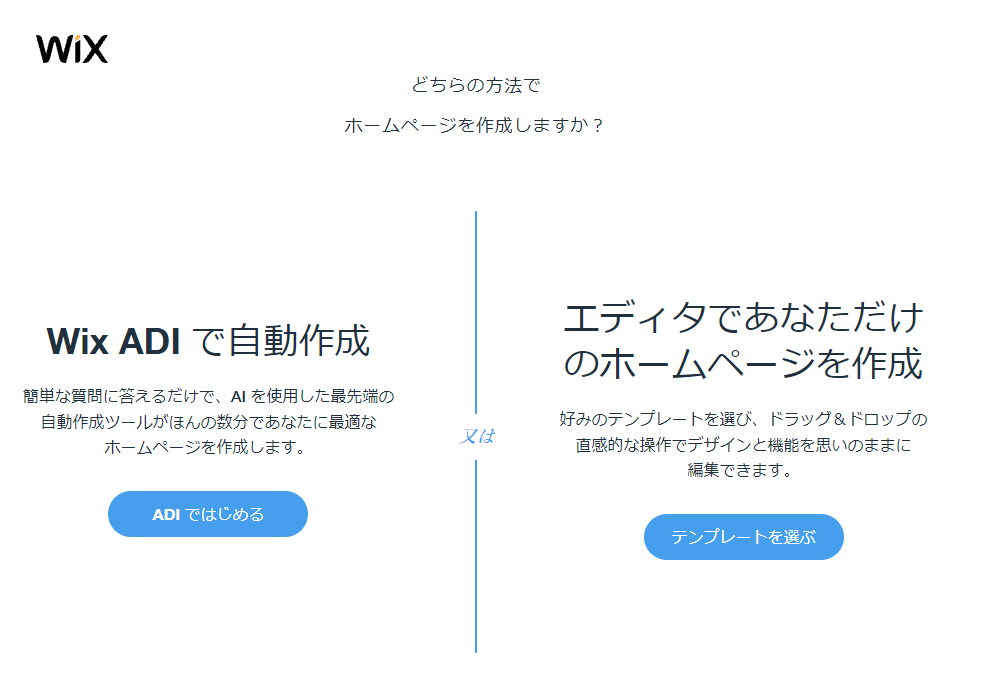
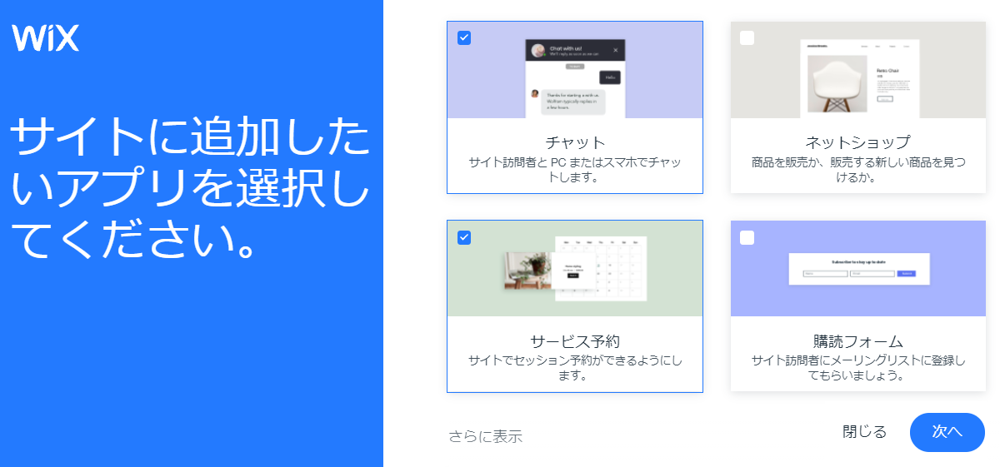
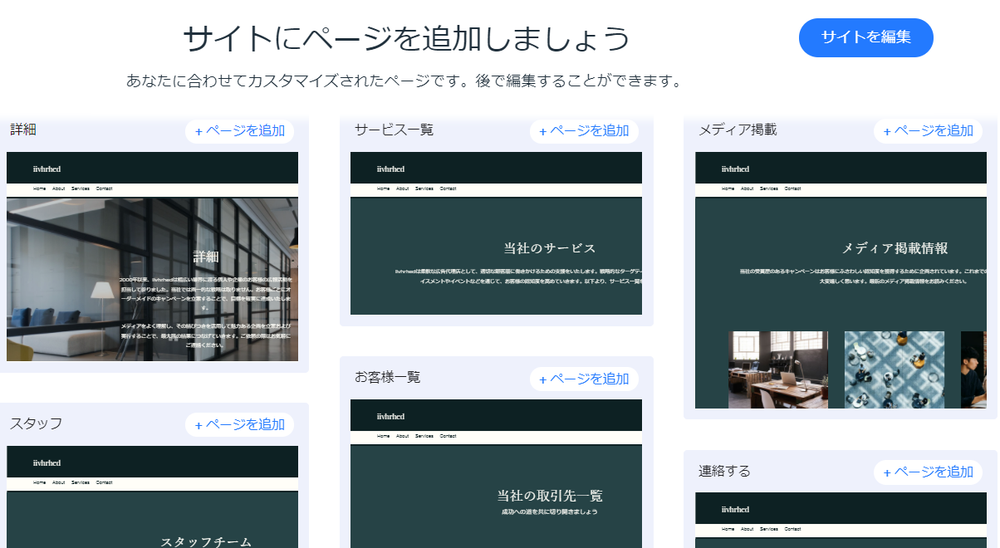
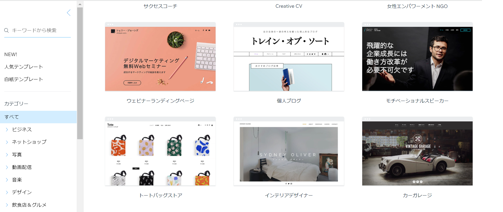
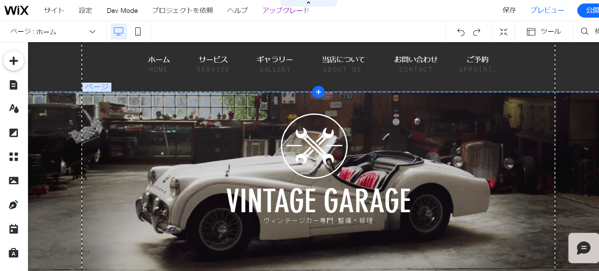
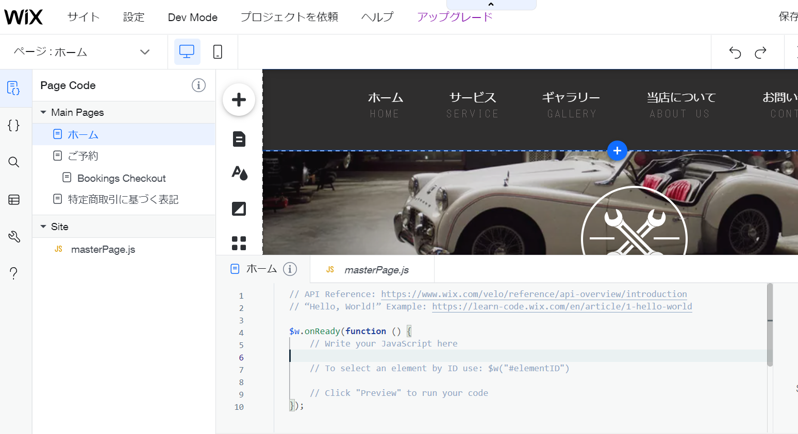

記事編集：7月30日

当ページでは、実際にＷＩＸでホームぺージを作ってみたレビューに加えて料金体系やメリットデメリットについて解説をしています。
ＷＩＸを簡単に説明すると「ドラッグ＆ドロップのマウス操作で、誰でもかんたんにホームページが作れる」サービスになります。
HTMLを理解していなくても800種類以上あるデザインテーマから好きなテーマを選んで、 後はテーマを編集してホームページを作ることができます。
さらにWIX ADIと呼ばれるサービスでは、幾つかの質問に答えるだけでイメージに近いホームページが作れます。
この簡易ホームページ作成のサービスには日本で言えば「グーペ」や「ペライチ」、 海外では「Weebly（ウィーブリ―）」や「Squarespace（スクエアスペース）」などたくさんの会社が参入しています。
ＷＩＸは1億人以上という圧倒的な登録者数で、世界でも日本でも最もシェアを持つサービスになっています。
無料プランがあって0円でもホームページが作ることが出来ます。
誰でも、かんたんに作れるということで１日～２日かけて実際に作ってみたのがこちらになります （美容室ＷＩＸ）。 スマホ表示はかなりズレて表示されていますが、ＰＣで見ると少なくともそれなりの出来に見えます。

まず、感想を述べると本当にかんたんに作れてしまったというのが率直な意見です。
私の場合、10年以上ホームページ制作に携わっていますので、慣れているというのもありますが、 簡単にインタラクティブな動きのあるWebサイトが作れます。
ちなみに2日で作ったサイトは、テンプレートを選んでから、 有料の素材サイトで探した海外女性モデルのイメージを設置して作っています。
そしての今では、美容室サイトを作った当時より遥かにサービス内容がグレードアップしています。
まず、制作面で言えば「Wix ADI」が実装されました。 これは、簡単な質問に答えるだけでAIが自動的に最適なホームぺージを 作成してくれるサービスになります。その後、カスタマイズも出来ます。
ＷＩＸでホームページを作る場合は「wixAdi」で作るか、今まで通りに「デザインテーマ」を選んで作るか最初にどちらかを 選択する形になります。
「WixAdi」か「デザインテーマ」から作る2種類の方法を選ぶ

どちらの方法で作成をしても「チャット」「予約機能」「購読フォーム」など、たくさんの関連アプリが用意されています。 アプリをインストールするだけで高度なサービスが導入できます。
WixAdiでの作成画面

次の画像はWix ADIで作成していている場合の画面になります。どんな雰囲気のサイトにしたいか、好きなデザインを選ぶことが出来ます。
WixAdiでの作成画面

さらにページにどんな機能を実装したいのか、選ぶことが出来ます。 「会社概要」「メンバー紹介」「お問合せ」など、選ぶだけで個別に機能を追加することができます。
WixAdiでの作成画面

このように、WixAdiでは質問に回答するだけでホームぺージが作れます。
作り終えた後もアプリを追加すれば、コミュニティのフォーラムページを作ったり、チャットボットを設置することも出来ます。
以前は、普通のコーポレートサイトや店舗の紹介用サイトを作れるだけのサービスのイメージでしたが、 今ではWeb制作会社とIT開発の会社が合わさって作ったようなホームぺージも作れるようにまでなっています。
ただしWIXADIで作ったサイトをテーマに変更したり、反対にテーマで作ったサイトをWIXADIに変更することは出来ません。 どちらの方法で構築していくか、無料版で体験して比較すると良いでしょう。
Wix Adiではなくてデザインテーマから作る場合も、メリットがたくさんあります。 まず第一のメリットとしては、デザイン性に富んだテーマが800種類以上も用意されていることでしょう。
美容院、飲食店、会社のコーポレートサイトなど色々な分野のテンプレートがあります。 フラットデザインでクオリティが高いテーマも多くなっています。
Wixのデザインテーマ

ＷＩＸではマウス操作のドラッグ＆ドロップでホームぺージが編集出来るようになっています。
画像の大きさを変えるのもマウス操作だけで出来ますし、スライドを入れたり、フレームを選んで枠を作ったりなんてこともボタン１つでしてくれます。
アニメーションやフレームの種類が多いのも魅力で、選んでボタンでクリックしておしまいです。
文字の入力にしても大きさ、書体、そしてドロップシャドウなどのデザインパターンがいくつも用意されていて、とてもカンタンです。ボタン１つです。
この作業をＨＴＭＬ、ＣＳＳ、フォトショップなんかを駆使して作るとなると本当に大変というか、 Web制作者が1か月ぐらいかかりそうなサイトを、ボタン１つの処理で出来てしまうのには驚きました。
しかも知識はほとんど要らないため、誰でも作ることができます。
Wixのテーマエディター画面

また、WIXでは開発者向けサービスとして、Webアプリケーションやデータベースと連携をした ホームぺージ制作もできるようになっています。またHTMLも自由にいじることが出来ます。
これにより「WIXで作るホームぺージをもっと良くしたい」という方は、自分自身で制作していくことが出来るようになっています。
開発者モードでソースにも触れる

さらに「WIXストア」「WIXフォーム」「WIXチャット」「WIXフォーラム」様々な機能を持ったアプリが開発されていて、WIXアプリとして導入することが出来ます。
予約プラットフォームや、会員専用アカウント、翻訳アプリなどのアプリもあります。多くのアプリは有料になりますが無料で利用できるものもあります。
ＷＩＸは基本的に「デザイン性が高いコーポレートサイト」や「ショップ用のサイト」などを作るのに適しています。
イメージとしては5ページから10ページぐらいのボリュームのWebサイトになります。
一方で、沢山のページを作ってアクセス数を増やしたいメディアサイトには向いていません。 WIXは自動でコーディングしてくれる分、Webサイトのソースは自動生成されるJavascriptやCssで埋め尽くされているため、 SEOに適した作りにはなっていないのが現状になります。
実際、Googleなどの検索で1ページ目に表示されるサイトは、現時点ではワードプレスで作られたサイトが多くＷＩＸのサイトはあまり出てきません。
集客が狙いの場合はWordpressでの作成がベターでしょう。
Wixは簡単ホームページ作成サービスの競合他社よりも、圧倒的に多くのことが出来るサービスになっています。ただし、最近では機能が高度化したことによって操作が難しくなっているイメージを持ちます。
2016年当時は、初めての操作でもなんとなくの操作で作れていましたが、2021年では出来ることが増えた分、 ＷＩＸ自体のカスタマイズ方法を知らないと、簡単な変更が出来なくなっています。
ＷＩＸを覚える学習コストはかなり増えていると言って良いでしょう
ある一定の水準以上のサイトを作りたい場合は、Wordpressのようにある程度の学習時間が求められると思います。
ＷＩＸはフリープランがあります。そのため0円でもホームページを作ることが出来ます。 その他、多彩な有料プランが用意されています。
一般向けの「ホームぺージプラン」が4種類。ECサイトの決済が出来る「ビジネス＆Ｅコマースプラン」が3種類あります。
ビジネスツールのアップグレードに対しても追加料金がかかります。
各プランの料金体系について紹介します。
企業ホームぺージやお店のホームぺージなど、一般向けサイトを作るならこちらになります。
無料プランとドメインプランにはWIX広告がページ内に表示されるため、実質ちゃんとしたホームページとして作りたい場合は ベーシックプラン（月額1,300円）への加入が必要となります。
| 無料 | ドメインプラン | ベーシック | アドバンス | ＶＩＰ |
|---|---|---|---|---|
| 0円 | 750円 年間割500円 |
1,300円 年間割900円 |
1,912円 年間割1,500円 |
3,300円 年間割2,659円 |
| 広告表示あり | 広告表示あり | － | ー | ー |
| 独自ドメイン：× | 独自ドメイン：〇 | 独自ドメイン：〇 | 独自ドメイン：〇 | 独自ドメイン：〇 |
| 500MB | 500MB | 3GB | 10GB | 35GB |
| － | － | 動画30分 アップ可 |
動画1時間 アップ可 |
動画5時間 アップ可 |
競合サービスとしてグーペ（月額1,500円）、ペライチ（無料プランあり）があります。
ホームぺージで決済や予約をできるようにしたい。ECサイトのようなサイト制作ならこちらのプランになります。
| ビジネス | ビジネスプラス | ビジネスVIP |
|---|---|---|
| 2,200円 年間割1,800円 |
3,200円 年間割2,700円 |
4,400円 年間割3,800円 |
| 20GB | 35GB | 50GBGB |
| オンライン決済 | オンライン決済 | オンライン決済 |
| 動画5時間アップ可 | 動画10時間アップ可 | 無制限アップ可 |
| サービス予約 | サービス予約 | サービス予約 |
| 会員制＆チケット制サービス | 会員制＆チケット制サービス | 会員制＆チケット制サービス |
ECサイト構築サービスの場合、競合にShopify、BASEがあります。
動画の作成、メールマガジンの発行、インスタグラム投稿をしたい場合には、プランをアップグレードすることも出来ます。
| 無料 | ベーシック | スペシャル | 無制限 |
|---|---|---|---|
| 無料 | 1,300円 年間割1,017円 |
3,000円 年間割2,442円 |
6,000円 年間割4,984円 |
| メルマガ3回迄 | メルマガ5回迄 | メルマガ20回迄 | 無制限 |
| フォーム5個（制限あり） | フォーム10個 | フォーム20個 | 無制限 |
| チャットボックス追加（広告あり） | チャットボックス追加 | チャットボックス追加 | チャットボックス追加 |
| 動画作成3本 | 動画作成5本 | 動画作成10本 | 動画作成15本 |
| 独自ドメイン（.com） | メールアカウント | WHOIS情報登録 |
|---|---|---|
| 1年契約：1,800円 2年契約：3,300円 3年契約：4,600円 |
－ | 年額10ドル |
独自ドメインについては、他社で登録したドメインを設定することもできますし、ＷＩＸ内で購入することも可能になっています。
「.com」料金の場合、1年間で1,800円。2年間まとめてだと合計3,300円（1年あたり1,650円）になります。
ＷＩＸで独自ドメインを登録した場合、ドメイン料金とは別に「Whois代理登録料」もかかります。
自分が登録した時は年間1,080円ほどになっていましたので、今でも同じぐらいの料金だと思います。
WIXのドメイン料金は料金が高いなっていて、なおかつWhois情報の料金も発生しますので、 「お名前.com」や「ムームードメイン」でドメイン登録してWIXに設定した方がお得と言えます （参照：お名前.comの解説）
結論として、ＷＩＸのサイト作成ツールとしての性能は破壊的なもので、 本当に経験０の初心者の方でもWeb制作会社に近いデザインのサイトが作れます。
ＷＩＸが高機能化した分、学習コストがかかると説明していますが、それでもアプリやテンプレートを使うにはWIXの操作方法を覚えるだけなので、 本来、自分でHTMLやJAVAなどで開発を行う労力と比べてたら雲泥の差があります。
私が考えるＷＩＸの利用に適しているのは次のような方です。
自社のコーポレートサイトを作るにあたりWeb制作会社に依頼したくない場合は、WIXが向いているでしょう。 また自営業の方が店舗用サイトを作りたい場合も向いていると思います。
無料版でWIXの広告がページ内に入っても良いのであれば、自分の趣味サイトやクラブ活動のサイト作成にも向いているでしょう。
一方で、凝ったホームページではなく、会社概要や地図ページなどだけのサイトで充分な場合、 ＷＩＸよりもグーペやペライチなど他のホームページ簡易作成サービスの方がより簡単に作れるでしょう。
サイトビルダーのサービスはＷＩＸ以外にもたくさんあります。
現時点で、競合サービスとして紹介したい会社は日本企業が運営する「グーペ」「ペライチ」、 そして海外企業でも比較的、日本化している「Weebly」などが良いでしょう。
| サービス名 | テーマ数 | 特徴 |
|---|---|---|
| グーペ | 40種類 | GMOペパポ運営。企業と店舗に特化したサイトビルダー。簡易的なホームページ作成に向いている。月額1,200円から |
| ペライチ | 400種類 | 株式会社ペライチ運営。フリープランと3種類の有償プランあり。登録者30万人以上。サポートが厚く400名を超えるペライチサポーター制度あり |
| Weebly | 海外企業square運営。フリープランあり。登録者数百万人。連携アプリ200種類。 |

demiglaze
Web制作を始めて約19年になります（HTML/css、Photoshop、Webマーケティング）。2005年から当サイトの運営を開始。 これまでに300個以上のドメインを取得、10社を超えるレンタルサーバーを利用してきました。